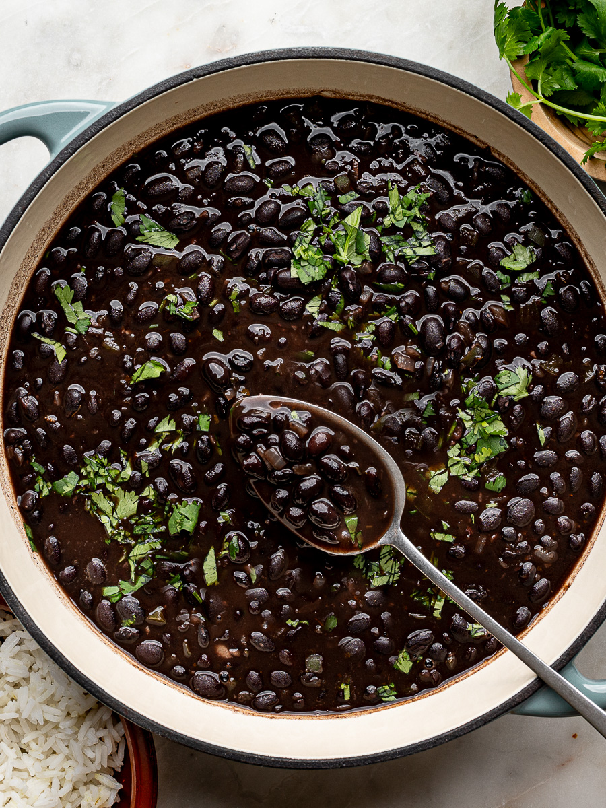

Home
Black beans

Description
This black beans recipe is very simple, and very easy to make, and with the required preparations takened properly, it can be done pretty quickly as well.
Ingredients
- 1 lb of black beans
- 1 bell pepper
- 1 onion
Steps
- Soften the beans: Place the beans in a pot, add plenty of water, and start cooking them. They'll be there for a while.
- Using the vegetables: Chop the onion and the bell pepper into small pieces, and in a pan, add oil, and then the vegetables. Cook until the onions are light brown.
- Mixing the ingredients: At this point the beans should've already absorbed some of the water, and should have started to soften. You will add the vegetables to the beans, (or viceversa,) add as much water as required, (it should always have some water above the beans,) and cook until the beans are cooked. Remember to keep an eye on them and stir ocassionally, as they can get dry and can stick to the bottom and sides of the pot.
- Finishing touches: When the beans are soft, you can start adding your seasonings. For this simple recipe, we'll use salt, black pepper, and a little bit of vinegar. If you're not comfortable with this recipe, add the seasonings slowly and try the beans as you keep seasoning them until you find them just right.
- Enjoy!
Tips
- You can soak the beans the night before and that'll make the cooking process much faster.
- Some chopped cilantro gives a very good taste to the beans!
- If you go a little over with the salt, you can add some sugar to even it out.
- When the beans are finished, you can add some cooked salami or sausages to add some extra flavors and protein to the beans.
Media sources: How To Cook Canned Black Beans, by Sandra Valvassori.